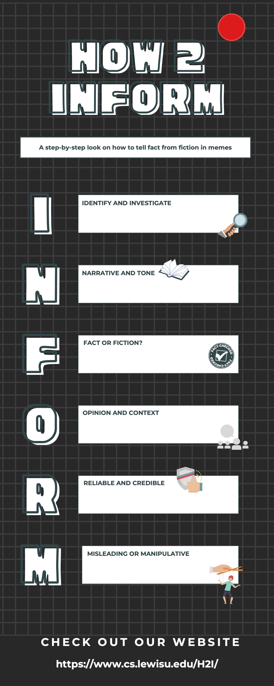

How 2 Inform is an online and physical initiative designed to engage middle school students in fact-based research to combat the rise of dangerous online misinformation. We accomplish this goal by providing middle school teachers with activities that build students’ abilities to discern whether online information they encounter daily is trustworthy. This action is taken to prevent targeted violence against people groups that stems from online misinformation. Example: K.E.Y program's mission statement : About K.E.Y.- Preventing Targeted Violence - Learn More (keycampaign.org)
